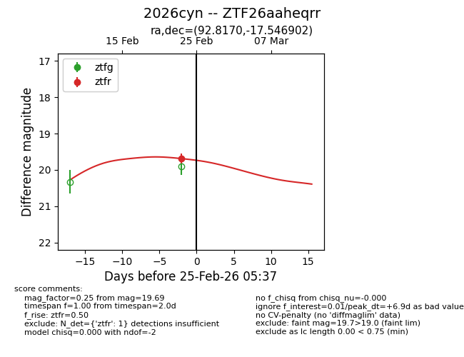
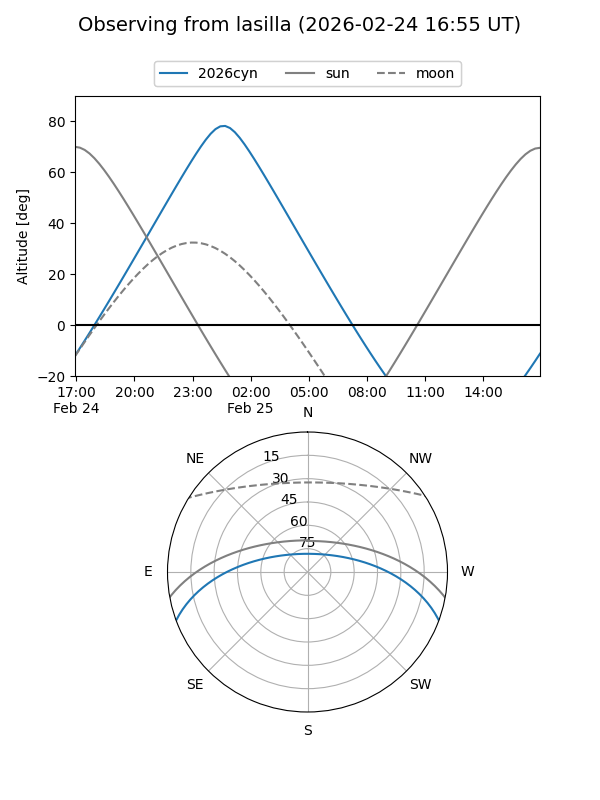
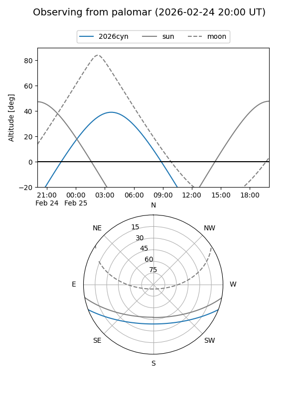
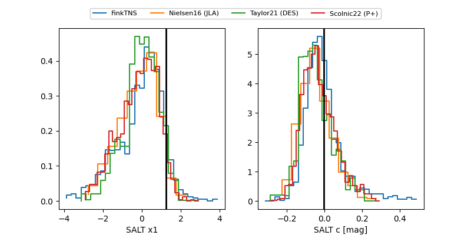

2026cyn
Target 2026cyn at 2026-02-25 05:38
Aliases and brokers:
FINK: link
Lasair: link
ALeRCE: link
TNS: link
YSE: link
alt names
ZTF26aaheqrr (ztf,fink_ztf)
2026cyn (tns,yse)
Coordinates:
equatorial (ra, dec) = 92.8170,-17.54690
equatorial (HMS+DMS) = 06:11:16.09,-17:32:48.85
galactic (l, b) = (224.5193,-16.58550)
Flags:
Photometry:
last ztfr=19.69
1 ztfr detections
Lightcurve

Visibility


Additional plots
